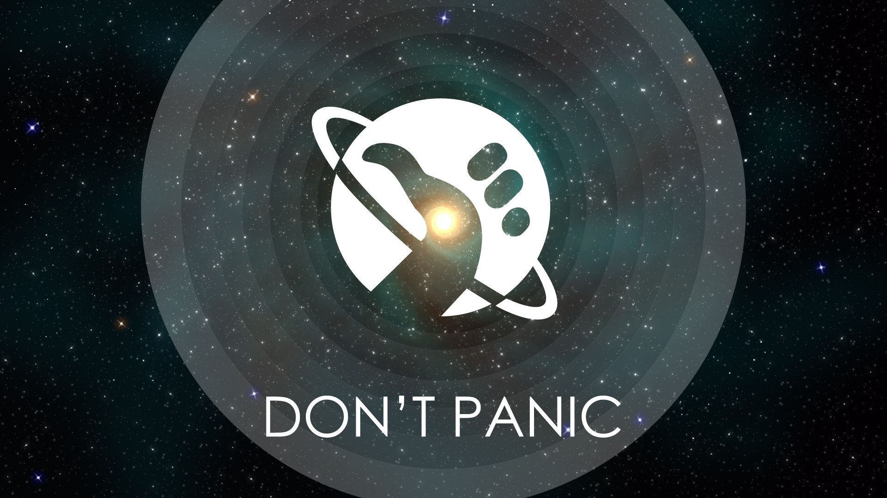

Да провались оно пропадом, подумал он. Что ему сейчас нужно — так это помощь и совет. Он достал «Путеводитель». Заглянул в раздел «Помощь» и прочел: «См. разд. „СОВЕТЫ“». Заглянул в раздел «Советы» и прочел: «См. разд. „ПОМОЩЬ“». Последнее время «Путеводитель» часто откалывал такие номера — может, тоже с тоски-кручины?Автостопом по галактике. Опять в путь.